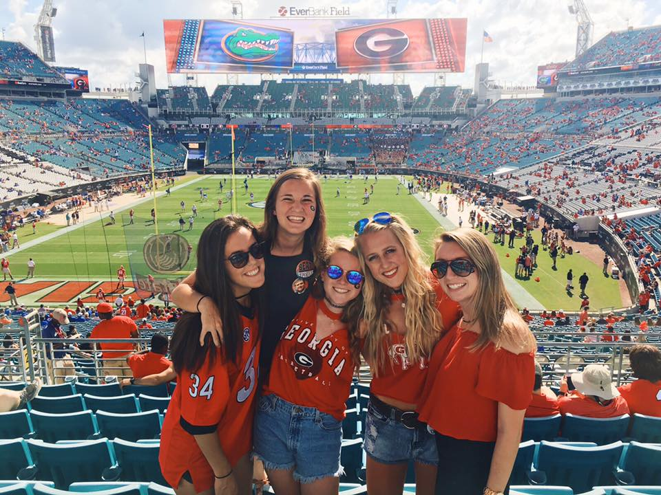

Hi! My name is Madison Bailey and I am a student at the University of Georgia. Ever since I was a little girl I have wanted to attend UGA. My mom went to UGA and so I was raised as a Georgia fan. I dreamed of the day that I got my acceptance letter and could attend the best school ever. When I got accepted in November of my senior year of high school, I was ecstatic. My mom and I jumped up and down and cried tears of joy. Now, I am in my second year here! My major is marketing which is in the business school, Terry. Next semester, I will be officially applying to the business school and begin taking business classes.
Before getting accepted to UGA, I decided I wanted to look at big, southern schools. I applied to:
In my first three semesters at UGA, I have taken a few general level classes that are essential in order to apply to the business school. My favorite class I have taken so far was Interpersonal Communications. We learned about how people interact with each other and different styles of communication. I found it very interesting! Although I have enjoyed the classes I have taken so far, I cannot wait to begin classes in my major!
As of now, I am a marketing major, but I am still figuring out what career path I want to take. Luckily I think I still have time to figure out the exact job I want to do one day, but I know for sure that I want to work in the corporate business world. I am a very socialable person so I would love to work in sales and be able to interact with others. I am so thankful to go to UGA because even just as a sophomore I have already been given many opportunities to succeed and figure out who I want to be!
| Monday | Tuesday | Wednesday | Thursday | Friday |
|---|---|---|---|---|
| 11:00-12:15 Micro Economics | 11:00-12:15 Micro Economics | 10:10-12:00 Computer Science Lab | ||
| 1:25-2:15 Spanish | 12:30-1:45 Ecology | 1:25-2:15 Spanish | 12:30-1:45 Ecology | 1:25-2:15 Spanish |
| 2:30-3:20 Computer Science | 2:00-3:15 Accounting | 2:30-3:20 Computer Science | 2:00-3:15 Accounting |
Classes I will be taking next year include:
This is a picture of me and some of my best friends enjoying a Georgia football game. Saturday's in Athens are one of the main reasons I love my school! Gooooooo Dawgs!
My favorite classes so far have been: